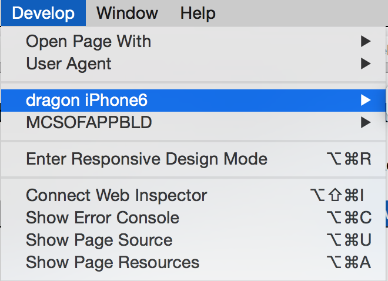
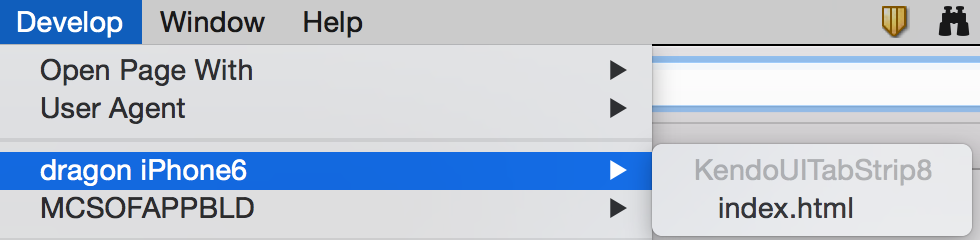

To debug iOS Cordova applications please follow this guide:
Open the "Develop" menu.
If you do not see the "Develop" menu check
here
.
Find your device in the menu.

Select the view of your application which you want to debug.

Note:
For more information about how to use Safari developer tools check
here
.